Slide 3 — Estimating means and covariances
สองบทแรกเริ่มจากโมเดลที่รู้สมการแล้วคำนวณ ACF ทางทฤษฎี แต่งานจริงไม่มีใครบอกสมการ เรามีแค่ตัวเลขชุดหนึ่ง บทนี้จึงกลับทิศ เริ่มจากข้อมูลแล้วตอบสามคำถาม คือคำนวณ ACF จากข้อมูลและอ่าน correlogram อย่างไร จะรู้ได้อย่างไรว่าข้อมูลจริงนิ่งหรือไม่ และถ้าไม่นิ่งเพราะมี trend จะกำจัดอย่างไร สามสัปดาห์แรกของวิชาเป็นการปูพื้น และสามเรื่องนี้ "เป็นตัวหลัก ต้องใช้" ตั้งแต่คาบถัดไปซึ่งจะเป็น application1 ข้อสอบช่วงแรกจะออกตามที่สอน คือมีโมเดลมาให้หา mean function กับ autocovariance function2 วิชานี้มีสอบย่อยทุกคาบและไม่มีสอบกลางภาค3 ส่วนเฉลยการบ้าน random walk with drift ที่ทำตอนต้นคาบนี้อยู่ใน Lesson 1 ตอนที่ 5
โจทย์ในสองบทแรกเริ่มจากสมการ เช่น \(X_t=w_t+0.3w_{t-1}+0.4w_{t-2}\) แล้วคำนวณ ACF สไลด์เตือนว่าในทางปฏิบัติเราไม่รู้สมการแบบนี้ การคำนวณจากสมการเป็นแบบฝึกให้เข้าใจสมบัติของโมเดล ส่วนงานจริงคือย้อนจากข้อมูลไปหาโมเดล โมเดลในบทก่อน ๆ ก็เหมือน f(x) ใน Lesson 1 ซึ่งชีวิตจริงไม่รู้ ต้อง estimate จากข้อมูลจริง4 เทียบได้กับการรู้สูตรแล้วทำอาหาร กับการชิมอาหารแล้วเดาสูตร สองบทแรกทำแบบแรก บทนี้เริ่มทำแบบหลัง ACF ที่นิยามว่า \(\rho(h)=\gamma(h)/\gamma(0)\) เป็นค่าของ population คือค่าจริงของ process ซึ่ง unknown ในข้อมูลจริง แต่ estimate ได้จากข้อมูล การเติมหมวกบนสัญลักษณ์หมายถึงตัวประมาณ5 \(\rho(h)\) จึงเป็นค่าจริงที่ไม่รู้และไม่เปลี่ยนตามข้อมูล ส่วน \(\hat\rho(h)\) คือ sample ACF ที่คำนวณได้และเปลี่ยนไปเมื่อเปลี่ยนชุดข้อมูล เช่นเดียวกับ \(\mu\) กับ \(\bar X\) และ \(\gamma(h)\) กับ \(\hat\gamma(h)\)
ตัวประมาณทุกตัวในบทนี้ใช้ได้เมื่อข้อมูล stationary เหตุผลมาจาก Lesson 2 ถ้าค่าเฉลี่ยเปลี่ยนทุกเวลา แต่ละเวลามีข้อมูลค่าเดียว จะประมาณค่าเฉลี่ยของเวลานั้นไม่ได้ แต่ถ้านิ่ง ค่าเฉลี่ยเท่ากันทุกเวลา ทุกจุดจึงช่วยกันประมาณได้ covariance ก็เช่นกัน ทุกคู่ที่ห่างกัน h ช่วงมี covariance เดียวกัน จึงเอามาเฉลี่ยรวมกันได้ ค่าเฉลี่ยประมาณด้วย sample mean \(\bar X=\frac1n\sum_{t=1}^{n}X_t\) ซึ่งง่ายมากและมักใช้แค่ดู6 แต่เป็นขั้นแรกของการคำนวณ \(\hat\gamma\) ส่วน Estimation of covariance structure (Shumway – page 29) ใช้ sample autocovariance \(\hat\gamma(h)=\frac1n\sum_{t=1}^{n-h}(X_{t+h}-\bar X)(X_t-\bar X)\) และ \(\hat\gamma(-h)=\hat\gamma(h)\) สูตรนี้มีสามจุดที่ต้องสังเกต7 จุดแรก หารด้วย n ไม่ใช่ n − 1 ต่างจาก sample covariance ในวิชาสถิติ แต่ไม่มีผลต่อ \(\hat\rho\) เพราะตัวหารจะตัดกันตอนแปลงเป็น correlation จุดที่สอง ตัวเศษมี n − h เทอม lag 0 มี n เทอมซึ่งเป็น sample variance ส่วน lag 1 มี n − 1 เทอม เพราะคู่ที่ห่างกัน h ช่วงมีเท่านั้น จุดที่สาม lag h กับ −h ถือว่าเหมือนกัน
เมื่อหารด้วย \(\hat\gamma(0)\) เพื่อทำ Estimation of correlation structure (Shumway – page 29) ตัว \(\frac1n\) จะตัดกัน ได้
\(\hat\rho(h)=\dfrac{\sum_{t=1}^{n-h}(X_{t+h}-\bar X)(X_t-\bar X)}{\sum_{t=1}^{n}(X_t-\bar X)^2}\)
ตัวส่วนมี n เทอมเสมอ ส่วนตัวเศษเปลี่ยนตาม lag8 lag h ในสูตรนี้คือทุกคู่ในข้อมูลที่ห่างกัน h ช่วง ไม่ได้นับจากวันแรก และไม่ได้ดูแค่ค่าก่อนหน้าตัวเดียว สไลด์เตือนว่าตัวประมาณใช้ได้ดีเมื่อ h ไม่ใหญ่เมื่อเทียบกับ n กฎคร่าว ๆ คือ \(|h|<n/2\) เพราะเมื่อ h ใหญ่ คู่ที่ใช้คำนวณเหลือน้อย ที่ h = n − 1 เหลือคู่เดียว ค่าที่ได้จึงไม่น่าเชื่อถือ และเพราะตัวเศษมี n − h เทอมแต่ตัวส่วนมี n เทอมเสมอ ค่าที่ lag ไกลจึงถูกดึงให้เล็กลงประมาณ (n − h)/n เท่าด้วย
ตัวอย่างในห้องใช้ข้อมูลห้าจุดเพื่อให้คำนวณมือได้ และเป็นเครื่องมือสำคัญในการตรวจความสัมพันธ์ระหว่างจุดเวลา9 \(\hat\rho(h)\) เป็นสิ่งที่ต้องคำนวณเป็น เพราะเคยออกในควิซแล้ว10 สไลด์เว้นคอลัมน์ \((X_t-\bar X)\) กับ \((X_{t+1}-\bar X)\) ไว้ให้เติม คอลัมน์ที่สองคือคอลัมน์แรกที่เลื่อนขึ้นหนึ่งแถว ซึ่งเป็นการจับคู่ค่าที่ห่างกันหนึ่งช่วงเวลา และผลคูณของสองคอลัมน์รวมกันคือตัวเศษของ \(\hat\rho(1)\) ไม่จำเป็นต้องเขียนคอลัมน์ครบทุกคอลัมน์แบบสมัยก่อน และถ้าเข้าใจแนวคิดก็ไม่ต้องจำสูตร11 การ์ดข้างล่างทำครบถึง lag 4 รวมสองค่าที่เป็นการบ้าน12
\(\bar X=(12+10+11+14+15)/5=62/5=12.4\)
−0.4, −2.4, −1.4, 1.6, 2.6 (ผลรวมต้องเป็น 0 ใช้ตรวจการคำนวณ)
\(0.16+5.76+1.96+2.56+6.76=17.2\)
\((-2.4)(-0.4)+(-1.4)(-2.4)+(1.6)(-1.4)+(2.6)(1.6)=0.96+3.36-2.24+4.16=6.24\) จึงได้ \(6.24/17.2=0.3628\)
\((-1.4)(-0.4)+(1.6)(-2.4)+(2.6)(-1.4)=0.56-3.84-3.64=-6.92\) จึงได้ \(-6.92/17.2=-0.4023\)
\((1.6)(-0.4)+(2.6)(-2.4)=-0.64-6.24=-6.88\) จึงได้ \(-6.88/17.2=-0.4000\)
\((2.6)(-0.4)=-1.04\) จึงได้ \(-1.04/17.2=-0.0605\)
\(\hat\rho(1)=0.36\) อ่านเป็นภาษาธุรกิจได้ว่าเดือนที่ติดกัน เช่น มีนาคมกับเมษายน ไปทางเดียวกัน มีนาคมมาก เมษายนก็มักมากตาม แต่ไม่แรง เพราะ 0.36 ไม่ได้สูง13 ส่วน \(\hat\rho(0)\) ไม่ต้องคำนวณ เพราะตัวเศษกับตัวส่วนเท่ากันจึงได้ 1 เสมอ14 ข้อควรระวังคือในคลิปพูดสลับว่า "ตัวส่วน 6.24 ตัวเศษ 17.2" ที่ถูกคือตัวเศษ 6.24 และตัวส่วน 17.2 ตามที่เขียนบนกระดาษ15 และเมื่อ n = 5 เส้นขอบในตอนถัดไปคือ \(2/\sqrt5=0.894\) ค่าทั้งหมดอยู่ในเส้น จึงยังสรุปไม่ได้ว่าไม่เป็นศูนย์ ตัวอย่างนี้มีไว้ฝึกวิธีคำนวณเท่านั้น
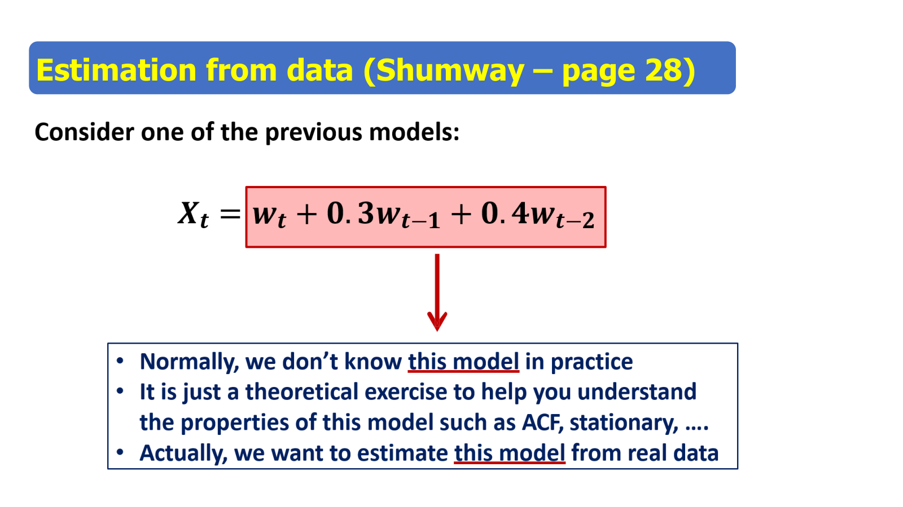
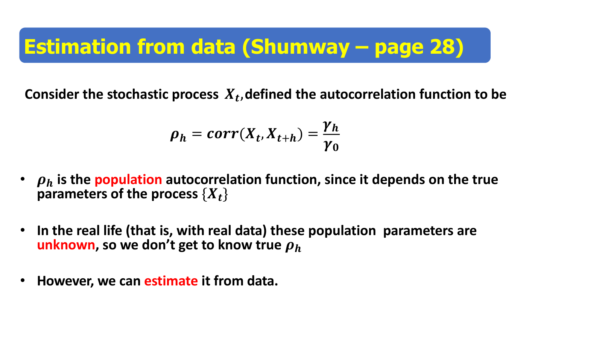
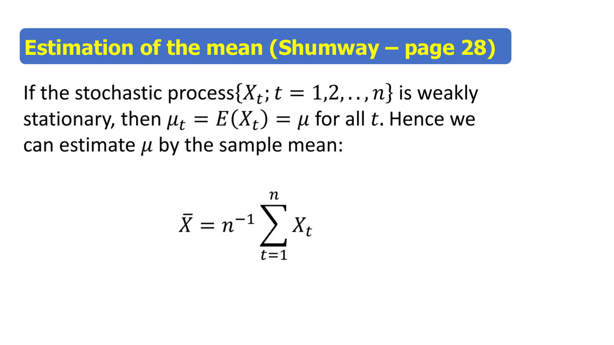
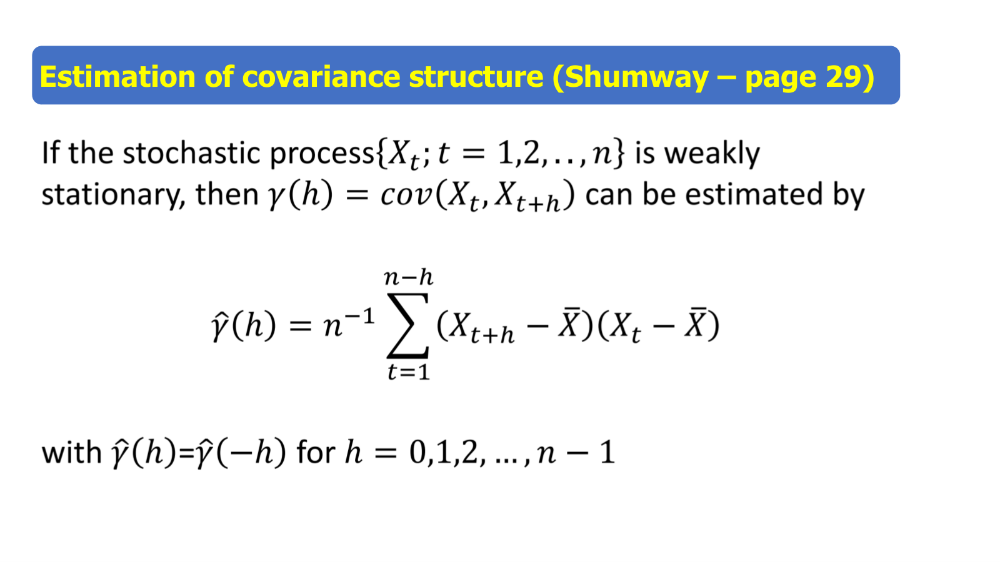
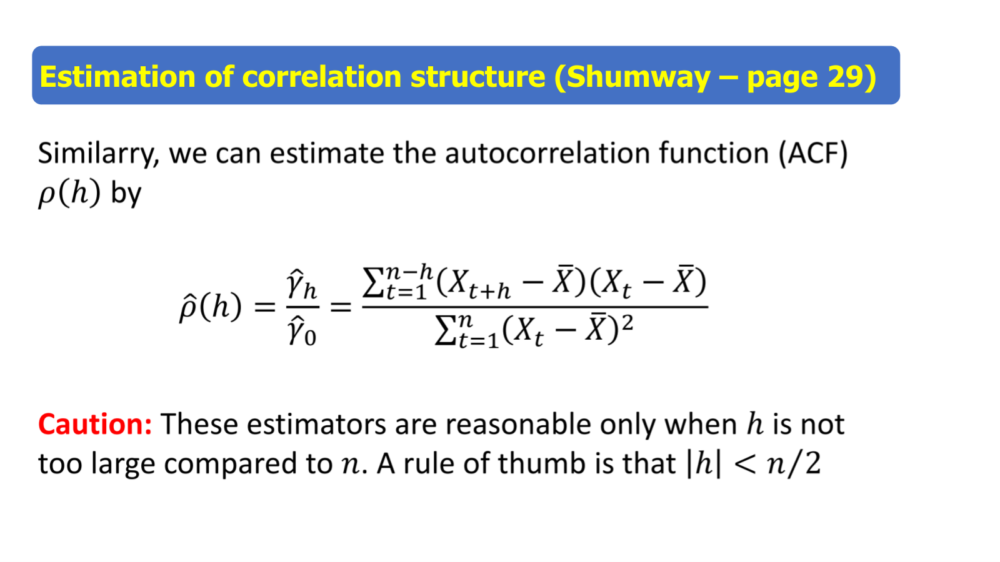
Correlogram คือกราฟของ \(\hat\rho(h)\) บนแกนตั้งกับ lag h บนแกนนอน ไม่ว่าใช้โปรแกรมไหนก็เรียกชื่อนี้16 และรู้จักอีกชื่อว่า autocorrelation plot (ACF) คือกราฟของ sample autocorrelations เทียบกับ h ซึ่งใช้ในขั้นเลือกโมเดลของ Box-Jenkins กราฟนี้ใช้ตรวจความนิ่งได้โดยตรง ถ้า ACF ตกจาก 1 เป็นประมาณ 0 ทันทีแล้วอยู่แถว 0 แปลว่า the series is stationary แต่ถ้า ACF ค่อย ๆ ลดจาก 1 ไป 0 ในช่วงยาว then it is not stationary เหตุผลของข้อหลังคือข้อมูลที่มี trend ค่าที่อยู่ใกล้กันในเวลามีขนาดใกล้กันเสมอ จะห่างกัน 1 หรือ 10 ช่วงก็ยังอยู่ฝั่งเดียวกันของค่าเฉลี่ย ผลคูณของส่วนเบี่ยงเบนจึงเป็นบวกต่อเนื่องหลาย lag
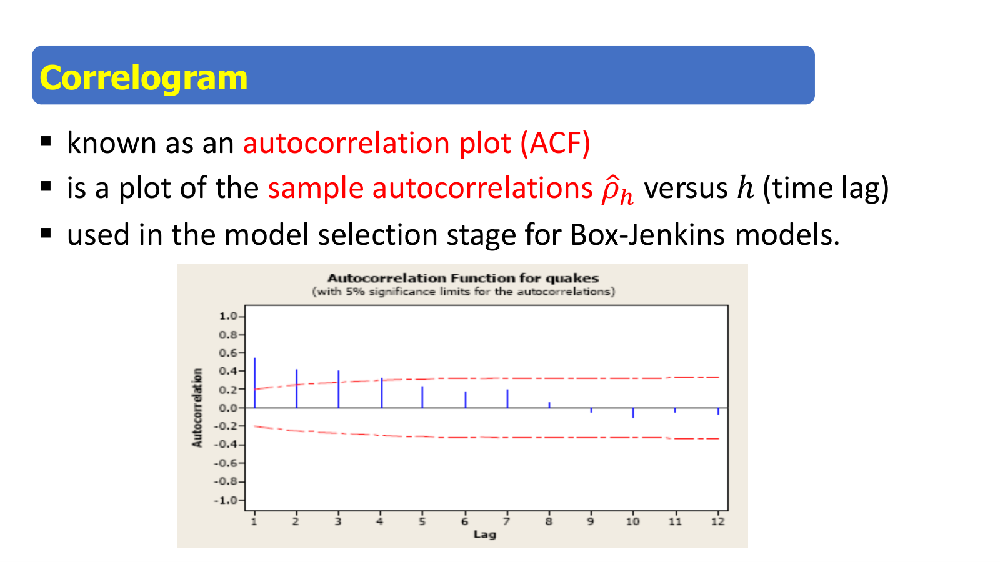
ข้อมูลแผ่นดินไหวจาก Minitab มี lag 1 ราว 0.55 lag 2 ราว 0.42 lag 3 ราว 0.41 และ lag 4 ราว 0.33 แล้วลดลงจนติดลบเล็กน้อยที่ lag 9–12 บางโปรแกรมอย่าง Minitab ไม่แสดง lag 0 แต่เริ่มที่ lag 1 เลย17 เส้นขอบของ Minitab ไม่คงที่ เริ่มราว ±0.2 ที่ lag 1 แล้วกว้างขึ้นเป็นราว ±0.33 เพราะใช้สูตรที่เผื่อความสัมพันธ์ของ lag ก่อนหน้า ส่วน R ใช้เส้นคงที่ ±2/√n ในกราฟนี้ค่าที่ lag 1–3 เกินขอบ จึงมีความสัมพันธ์อย่างมีนัยสำคัญ
เส้นขอบมาจากเหตุผลง่าย ๆ ถ้า \(X_t\) เป็น white noise และ n ใหญ่ \(\hat\rho(h)\) ของแต่ละ lag มีการแจกแจงประมาณปกติ ค่าเฉลี่ย 0 และส่วนเบี่ยงเบนมาตรฐาน \(1/\sqrt n\) แม้ข้อมูลไม่มีความสัมพันธ์จริง \(\hat\rho\) ที่คำนวณได้ก็ไม่เป็น 0 พอดีเพราะความบังเอิญ เส้นขอบบอกว่าความบังเอิญดันค่าออกจาก 0 ได้ไกลแค่ไหนใน 95% ของกรณี R ใช้ \(\pm2/\sqrt n\) ซึ่งมาจาก \(\pm1.96/\sqrt n\) ที่ความเชื่อมั่น 95% แท่งที่อยู่ในเส้นถือว่าน้อยและ ignore ได้ ส่วนแท่งที่ทะลุเส้นมีนัยสำคัญและไม่เป็นศูนย์18 เส้นนี้แคบลงเมื่อข้อมูลมากขึ้น ข้อมูล 5 จุดของตัวอย่างในห้องมีเส้นที่ 0.894 ทุกค่าจึงอยู่ในเส้น อุณหภูมิโลก 1900–1997 มี 98 จุด เส้นอยู่ที่ 0.202 white noise 100 จุดมีเส้นที่ 0.200 และถ้ามีข้อมูล 400 จุด เส้นจะแคบเหลือ 0.100 ซึ่งแยกความสัมพันธ์เล็ก ๆ ได้ เมื่อดู 20 lag พร้อมกัน คาดว่าราว 1 แท่ง (5% ของ 20) จะเกินหรือแตะเส้นโดยบังเอิญ จึงไม่ควรตื่นเต้นกับแท่งเดียวที่ปริ่มเส้นใน lag ไกล ๆ ให้ดูรูปแบบรวม วิธีอ่าน correlogram ทุกครั้งจึงมีสี่ขั้น คือข้ามแท่ง lag 0 ที่สูง 1 เสมอ ดูว่าแท่งใดเกินเส้นประ ดูรูปทรงว่าตกเข้าเส้นทันทีหรือลดลงช้า และถ้านิ่ง ดูว่าตัดหลัง lag ไหนเพื่อใช้เลือกโมเดลใน Lesson 5–7

white noise 100 ค่าที่สร้างใน R แกว่งระหว่างราว −2.2 ถึง 2.9 รอบ 0 ใน correlogram แท่ง lag 0 สูง 1 และ lag 1–20 อยู่ระหว่างราว −0.2 ถึง 0.16 ทั้งหมด แท่งที่ lag 9 ปริ่มเส้น −0.2 ซึ่งเป็นไปตามที่คาดเมื่อดู 20 lag เส้นที่ราว 0.2 มาจาก \(2/\sqrt{100}=0.2\) ซึ่งจริง ๆ คือ \(1.96/\sqrt{100}=0.196\)19 เมื่อรันในห้องได้ lag 1 = −0.078 และไม่มี lag ไหนทะลุเส้น เพราะ white noise คนละจุดเวลามี covariance เป็น 020 รูปแบบที่ตกเข้าเส้นทันทีหลัง lag 0 นี้คือหน้าตาของ white noise ในข้อมูลจริง
w <- rnorm(100, 0, 1) # สุ่ม 100 ค่าจาก N(0, 1)
timew <- ts(w)
acf(timew, plot = F) # พิมพ์ ρ̂(h) เป็นตัวเลข
par(mfrow = c(1, 2)) # วาดสองกราฟคู่กัน
plot(timew); acf(timew, main = "SAMPLE ACF")ในชีวิตจริงมีแค่ข้อมูล ไม่มีโมเดลให้หา mean function เครื่องมือตรวจความนิ่งจึงเป็น correlogram21 ถ้าอนุกรมไม่นิ่ง ไม่ว่าเพราะมี trend หรือความแปรปรวนไม่คงที่ correlogram จะลงช้ามาก แต่ไม่ได้บอกว่าไม่นิ่งเพราะอะไร22 ภาพที่พบบ่อยคือแท่งที่ lag 1, 2, 3 ยังสูงเกือบเท่า lag 0 แล้วลดลงช้า ๆ ต่อเนื่องหลายสิบ lag

ข้อมูลอุณหภูมิโลกชุดเดียวกับ Lesson 2 เมื่อตัดเหลือปี 1900–1997 (98 ปี) มี trend ขาขึ้นชัด จากราว −0.5 ช่วงปี 1910 ขึ้นไปถึง 0.43 ในปี 1997 ส่วน correlogram ลดลงช้ามาก ค่าที่รันจริงคือ lag 1 = 0.819 lag 2 = 0.720 lag 5 = 0.632 lag 10 = 0.430 และ lag 15 = 0.246 และยังเกินเส้น 0.202 จนถึง lag 16 (0.228) ก่อนลดเหลือ 0.187 ที่ lag 17 รูปแบบที่ค่อย ๆ ลงนี้บอกว่าไม่นิ่ง ในกรณีนี้เห็น trend ด้วยตาอยู่แล้ว แต่บางข้อมูลมีความแปรปรวนต่างกันเล็กน้อยที่ตาจับไม่ได้ กราฟนี้จึงมีประโยชน์23 เมื่อเทียบกับ white noise ที่ตกเข้าเส้นทันที ความต่างชัดมาก
temp <- read.table("temp.txt")
newtemp <- ts(temp, start = 1856)
newtemp.1900 <- window(newtemp, start = 1900) # เหลือปี 1900–1997 จำนวน 98 ปี
par(mfrow = c(1, 2))
plot(newtemp.1900, ylab = "Global temperature", xlab = "Year", type = "o")
acf(newtemp.1900, main = "Sample ACF for global temperature") # เส้นประ ±2/√98 = ±0.202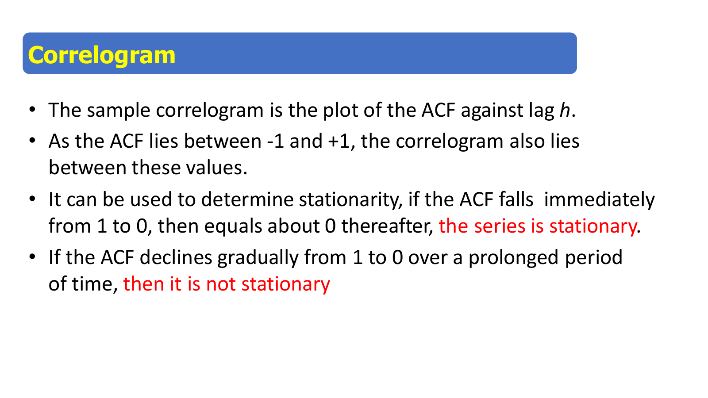
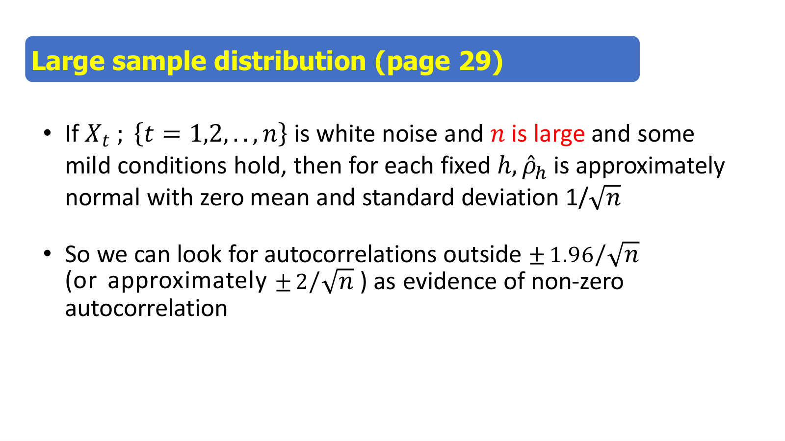


การอ่าน correlogram ใช้สายตาตัดสิน จึงค่อนข้าง subjective24 ทางเลือกที่ให้คำตอบเป็นตัวเลขคือการทดสอบทางสถิติ การทดสอบหลักของวิชานี้คือ ADF test ซึ่งจะใช้อีกในโมเดลขั้นสูง และอีกตัวที่นิยมในงานระดับปริญญาโทคือ KPSS25 ADF (Augmented Dickey-Fuller) ตั้ง \(H_0\) ว่าอนุกรมไม่นิ่ง และ \(H_a\) ว่าอนุกรมนิ่ง ใน R ใช้ library(tseries) แล้วเรียก adf.test(x) สิ่งที่เราอยากได้คือการปฏิเสธ \(H_0\) เพราะถ้าไม่นิ่งต้องไปปรับข้อมูล26 p-value น้อยกว่า 0.05 จึงแปลว่าปฏิเสธ \(H_0\) และข้อมูลนิ่ง สร้างโมเดลได้เลย ส่วน p-value ตั้งแต่ 0.05 ขึ้นไปแปลว่าไม่ปฏิเสธ ข้อมูลไม่นิ่ง ต้องกำจัด trend ก่อน เหตุผลที่ \(H_0\) เป็น "ไม่นิ่ง" มาจากโครงสร้างของการทดสอบซึ่งอธิบายใน Lesson 7 คือทดสอบว่าสัมประสิทธิ์ของค่าเมื่อวานเท่ากับ 1 แบบ random walk หรือไม่

ผลกับข้อมูลอุณหภูมิตั้งแต่ปี 1900 คือ Dickey-Fuller = −2.2512, Lag order = 4 และ p-value = 0.4726 ซึ่งมากกว่า 0.05 จึงไม่ปฏิเสธ \(H_0\) ข้อมูลไม่นิ่งเพราะมี trend27 ตรงกับ correlogram ในตอนที่แล้ว ค่า Lag order = 4 มาจากสูตรค่าเริ่มต้น \(\lfloor(n-1)^{1/3}\rfloor=\lfloor97^{1/3}\rfloor=\lfloor4.6\rfloor=4\) คำถามที่ตามมาคือควรใช้กราฟหรือการทดสอบ คำตอบคือทำอย่างเดียวก็พอ28 แต่ละวิธีมีข้อดีข้อเสียต่างกัน correlogram ใช้ง่าย เห็นรูปแบบทั้งหมด และบอกได้ว่าควรใช้โมเดลแบบไหนต่อ แต่ขึ้นกับสายตาของผู้ดู ส่วน ADF ให้คำตอบเป็นตัวเลขที่ทุกคนได้ตรงกัน แต่บอกแค่นิ่งหรือไม่นิ่ง และตรวจเฉพาะ trend แบบ unit root ไม่ได้ตรวจความแปรปรวนที่ไม่คงที่

เมื่อพบว่าไม่นิ่งเพราะมี trend เราจะทำอย่างไร อนุกรมที่ไม่นิ่งที่พบบ่อยที่สุดคือแบบมี trend เริ่มจาก linear trend หรือเส้นตรงก่อน แล้วจึงเป็น quadratic หรือเส้นโค้ง29 ข้อมูลที่ขึ้นแบบซิกแซกคือเส้นตรงที่ถูก noise ดึงขึ้นดึงลง30 สไลด์สมมติว่าอนุกรมมีรูปแบบที่เป็นระบบอย่างน้อยหนึ่งแบบ ที่พบบ่อยที่สุดคือ trend และ seasonality trend มักเป็นเส้นตรงหรือเส้นโค้งกำลังสอง และหาได้ด้วย moving average หรือ regression คำว่า deterministic trend หมายถึง trend ที่เป็นฟังก์ชันแน่นอนของเวลา เช่น เส้นตรง \(\beta_1+\beta_2t\) ซึ่งไม่มีส่วนสุ่มในตัว ต่างจาก random walk ใน Lesson 1 ที่เดินออกไปเพราะผลรวมของแรงกระแทกสุ่ม ซึ่งเรียกว่า stochastic trend
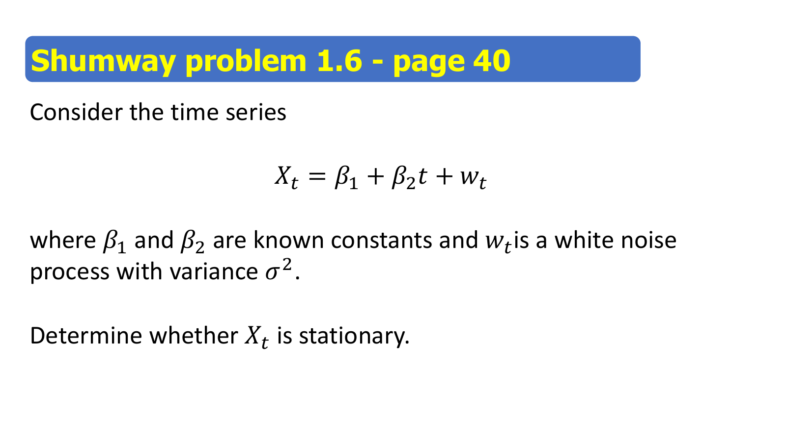
Shumway problem 1.6 ให้ตัดสินว่า \(X_t=\beta_1+\beta_2t+w_t\) นิ่งหรือไม่ โดย \(\beta_1,\beta_2\) เป็นค่าคงที่ที่รู้ค่า และ \(w_t\) เป็น white noise ที่มีความแปรปรวน \(\sigma^2\) ข้อนี้เป็นข้อสอบเก่าที่ให้พิสูจน์ว่าทำไมอนุกรมที่มี trend จึงไม่ stationary31 ค่าเฉลี่ยคือ \(E(X_t)=\beta_1+\beta_2t+E(w_t)=\beta_1+\beta_2t\) เพราะ \(\beta_1+\beta_2t\) เป็นแค่ค่า ไม่ใช่ตัวแปรสุ่ม32 ส่วน \(\gamma(h)=\mathrm{cov}(w_t,w_{t+h})\) เท่ากับ \(\sigma^2\) เมื่อ h = 0 และ 0 เมื่อ h ≠ 0 ซึ่งไม่ขึ้นกับ t variance กับ autocovariance จึงผ่าน33 แต่ค่าเฉลี่ยขึ้นกับ t เมื่อ \(\beta_2\ne0\) อนุกรมนี้จึงไม่นิ่ง และการแก้ปัญหาต้องแก้ที่ค่าเฉลี่ย34 ลองแทนตัวเลขดู ถ้า \(\beta_1=10\) และ \(\beta_2=2\) จะได้ \(E(X_1)=12\) แต่ \(E(X_{50})=110\) ปัญหาอยู่ที่ค่าเฉลี่ยอย่างเดียว ถ้าเอา trend ออกได้ ส่วนที่เหลือจะนิ่ง
เป้าหมายของการสำรวจข้อมูลคือตัดสินว่าโมเดลแบบไหนอธิบายข้อมูลได้ ถ้าข้อมูลดูนิ่ง ให้คำนวณ sample autocorrelations, แล้วใช้เลือกโมเดล แต่ many time series do not appear stationary เช่น กำไรของ Johnson and Johnson และ global temperature เมื่อข้อมูลมี deterministic trend จึงต้องเอา trend ออก ซึ่งทำได้ two ways วิธีแรกคือ detrending ประมาณ trend แล้วลบออกจากข้อมูลด้วย regression วิธีที่สองคือ differencing ที่ Box และ Jenkins พัฒนา คือทำผลต่างซ้ำจนผลต่างดูเหมือนอนุกรมที่นิ่ง วิชานี้จัดการ trend สองวิธีนี้ ส่วน decomposition ใน Lesson 4 จะหา trend ด้วย regression หรือ moving average35 เทียบได้กับการเอาความลาดชันของถนนออกจากข้อมูลความสูง detrending วัดความลาดชันก่อนแล้วลบออก ส่วน differencing ดูแค่ความต่างของก้าวที่ติดกันโดยไม่ต้องรู้ความลาดชัน
แนวคิดของ detrending คือมองข้อมูลเป็น \(X_t=\mu_t+Y_t\) โดย \(\mu_t\) คือค่าเฉลี่ยที่เปลี่ยนตามเวลา (trend) และ \(Y_t\) คือส่วนสุ่มที่มีค่าเฉลี่ย 0 ซึ่งก็คือ signal บวก noise ใน Lesson 1 \(\mu_t\) เป็น deterministic trend ที่มักถือเป็น "truth" หรือ "signal" ส่วน \(Y_t\) อาจนิ่งหรือไม่นิ่งก็ได้ ขั้นตอนคือหาค่าประมาณ \(\hat\mu_t\) แล้วทำงานกับ residual \(\hat Y_t=X_t-\hat\mu_t\) โดยต้องตรวจซ้ำเสมอว่า residual นิ่งจริงหรือไม่ เพราะการลบ trend ออกไม่ได้รับประกันผล สไลด์ให้กลับไปที่ problem 1.6 แล้วแสดงว่า (i.e. detrending) \(Y_t=X_t-(\beta_1+\beta_2t)\) นิ่ง ข้อนี้ทำในห้อง ส่วน differencing ให้เป็นการบ้าน36
\(Y_t=(\beta_1+\beta_2t+w_t)-(\beta_1+\beta_2t)=w_t\)
\(E(Y_t)=(\beta_1+\beta_2t)-(\beta_1+\beta_2t)+E(w_t)=0\) ไม่ขึ้นกับ t
เหมือนเดิม คือ \(\sigma^2\) เมื่อ h = 0 และ 0 เมื่อ h ≠ 037
ในภาษา regression residual คือ \(Y-\hat Y\) พอเป็นอนุกรมเวลาเราแค่เอา residual ไปวิเคราะห์ต่อ38 โดยไม่ได้ทิ้ง trend แต่เก็บไว้ก่อน วิเคราะห์ส่วนที่เหลือ แล้วสุดท้ายค่อยบวกกลับ39 เช่น ถ้าพยากรณ์ residual ปีหน้าได้ 0.05 และ trend ปีหน้าเท่ากับ 0.20 ค่าพยากรณ์ของข้อมูลเดิมคือ 0.25 ในโจทย์นี้ผลออกมาเป็น white noise พอดีเพราะรู้ \(\beta\) จริง แต่ข้อมูลจริงต้องประมาณ \(\beta\) และ residual ไม่จำเป็นต้องเป็น white noise ถ้า \(\mu_t\) มีรูปแบบที่เขียนด้วยพารามิเตอร์ได้ ให้ประมาณด้วย least squares แล้วลบออก รูปแบบนั้นอาจเป็น linear, higher degree polynomial หรือฟังก์ชันอื่นตามทฤษฎี residual เป็นตัวแทนของ \(Y_t\) ที่มองไม่เห็น จึงใช้ residual ตัดสินว่า \(Y_t\) มีโครงสร้างอะไร
ตัวอย่างจริงคือ Global temperature data ซึ่งเป็นค่าเบี่ยงเบนของอุณหภูมิเฉลี่ยโลกรายปีตั้งแต่ 1900 ถึง 1997 รวม 98 ค่า ("global warming" หมายถึงการที่อุณหภูมิเฉลี่ยใกล้ผิวโลกและมหาสมุทรเพิ่มขึ้นตั้งแต่กลางศตวรรษที่ 20) ในคลิปพูดว่า 97 จุด แต่ปี 1900 ถึง 1997 นับได้ 98 ปี และ output ของ R มี residual 96 องศาอิสระซึ่งเท่ากับ 98 − 2 ข้อมูลจึงมี 98 จุด ข้อมูลมี apparent upward trend จึงประมาณ trend ด้วยการ fit เส้นตรง \(X_t=\beta_1+\beta_2t+Y_t\) สำหรับ t = 1900, …, 1997 นี่คือ simple linear regression ที่ตัวแปรต้น t เป็นแค่ตัวบอกเวลา วัตถุประสงค์จึงต่างจากวิชา regression ซึ่งสนใจผลเชิงเหตุของ X ต่อ Y วิชานี้ต้องการแค่ intercept กับ slope ส่วนนัยสำคัญหรือ R² ไม่สำคัญ40 สไลด์ทวนสมมติฐานสี่ข้อของ error ใน standard regression setting คือค่าเฉลี่ย 0 อิสระต่อกัน ความแปรปรวนคงที่ และแจกแจงปกติ ข้อที่มักไม่จริงในอนุกรมเวลาคือความเป็นอิสระ เพราะข้อมูลมี autocorrelation เมื่อ error ไม่อิสระ standard error ช่วงความเชื่อมั่น t-test และ p-value ที่ R พิมพ์ออกมาจะไม่มีความหมาย ค่าเหล่านี้ถูกต้องเฉพาะเมื่อ \(Y_t\) เป็น white noise เงื่อนไขที่ต้องตรวจจึงเป็น the ACF of the residuals must be approximately zero ที่ทุก lag ≥ 1 เส้นตรงที่ประมาณได้ยังใช้เป็น trend ได้ สิ่งที่เชื่อไม่ได้คือตัวเลขที่บอกความแม่นของค่าประมาณ

เส้นที่ได้คือ \(\hat\mu_t=-12.19+0.0062t\) ซึ่งอ่านจาก output ของ R41 ความชัน 0.0062 แปลว่าอุณหภูมิเฉลี่ยเพิ่ม 0.0062 องศาต่อปี หรือ 0.62 องศาต่อ 100 ปี ค่า trend ปี 1900 คือ \(-12.19+0.0062(1900)=-12.19+11.78=-0.41\) และปี 1997 คือ \(-12.19+12.38=0.19\) ค่าจริงปี 1997 คือ 0.43 residual ปีนั้นจึงเป็น \(0.43-0.19=0.24\) ค่าคงที่ −12.19 คือค่าของเส้นที่ปี 0 ซึ่งดูแปลกเพราะ t เป็นเลขปีจริง ไม่มีความหมายเชิงอุณหภูมิ ถ้าใช้ t = 1, 2, …, 98 แทน ค่าคงที่จะเป็นราว −0.40 แต่ความชันเท่าเดิม (ถ้าใช้ค่าเต็ม −12.18641 และ 0.006209 ค่า trend ปี 1900 คือ −0.389) ในกราฟ เส้นผ่านกลางกลุ่มจุดจากราว −0.4 ในปี 1900 ถึงราว 0.2 ในปี 1997 แต่จุดจริงหลายช่วงอยู่เหนือเส้นติดกันยาว เช่น ปี 1937 ถึง 1945 และอยู่ใต้เส้นติดกันยาว เช่น ปี 1904 ถึง 1912 ซึ่งเป็นสัญญาณแรกว่า residual ยังมี autocorrelation
temp.1900 <- window(ts(read.table("temp.txt"), start = 1856), start = 1900)
fit <- lm(temp.1900 ~ time(temp.1900)) # หรือ t <- 1900:1997; fit <- lm(temp.1900 ~ t)
summary(fit)
plot(temp.1900, type = "o"); abline(fit)
plot(resid(fit), type = "o")
par(mfrow = c(2, 1))
acf(temp.1900); acf(resid(fit))Coefficients:
Estimate Std. Error t value Pr(>|t|)
(Intercept) -1.219e+01 9.032e-01 -13.49 <2e-16
time(temp.1900) 6.209e-03 4.635e-04 13.40 <2e-16
Residual standard error: 0.1298 on 96 degrees of freedom
Multiple R-squared: 0.6515
lm() fit เส้นตรงด้วย OLS ซึ่งทำให้ผลรวมกำลังสองของ error ต่ำสุด และ time() ให้ปี 1900, 1901, … เป็นตัวแปรต้น42 abline(fit) วาดเส้น trend ทับกราฟ ส่วน resid(fit) คือข้อมูลลบเส้น trend หรือ \(\hat Y_t\)
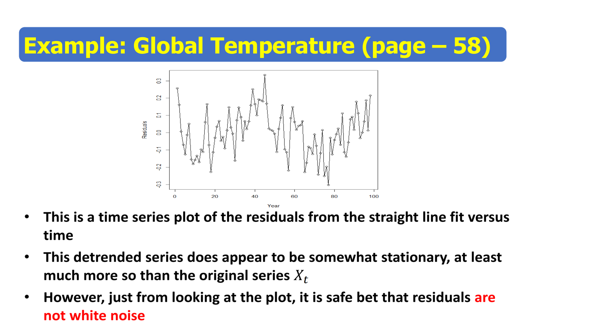
residual แกว่งระหว่างราว −0.3 ถึง 0.33 รอบ 0 ตลอด 98 ปี trend หายไปแล้ว residual ดูนิ่งขึ้น แต่อาจยังมีรูปแบบอื่นที่ต้องดูทีหลัง43 สไลด์เตือนว่าค่อนข้างแน่ใจว่า residual ไม่ใช่ white noise เพราะค่าเกาะกลุ่มเป็นช่วงยาว ช่วงต้นส่วนใหญ่ติดลบ ช่วงปีที่ 38 ถึง 48 ส่วนใหญ่เป็นบวก ค่าที่อยู่ติดกันไปทางเดียวกัน
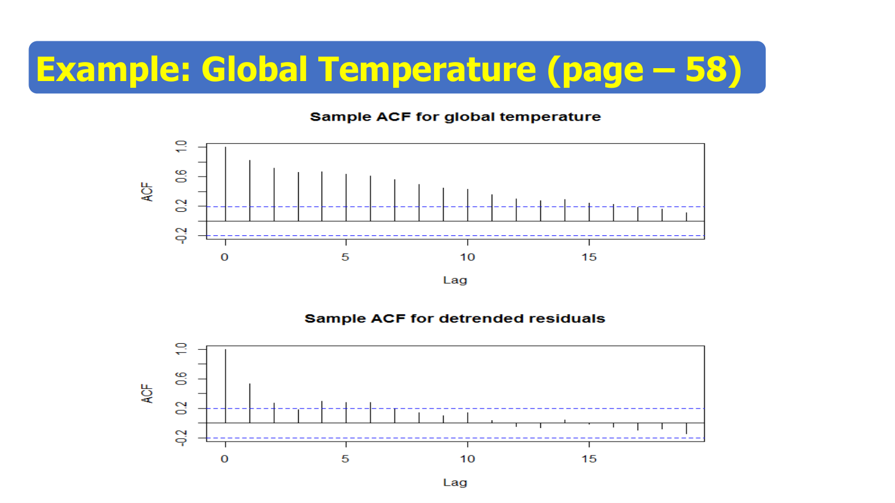
เมื่อเทียบ ACF ก่อนและหลัง detrend ACF ของข้อมูลเดิมลงช้า ๆ ส่วนของ residual ดีขึ้น44 ข้อมูลเดิมมี ACF lag 1–7 เป็น 0.819, 0.720, 0.657, 0.666, 0.632, 0.613, 0.559 และเกินเส้น 0.202 ไปถึง lag 16 ส่วน residual มี 0.530, 0.273, 0.184, 0.293, 0.278, 0.278, 0.192 และเกินเส้นถึง lag 6 การ detrend ลด lag 1 จาก 0.819 เหลือ 0.530 และลด lag สุดท้ายที่เกินเส้นจาก 16 เหลือ 6 แต่ lag 1 ยังเกินเส้นมาก เงื่อนไขที่ ACF ของ residual ต้องเป็นศูนย์จึงไม่ผ่าน และถ้ารัน adf.test(resid(fit)) จะได้ Dickey-Fuller = −2.2512 และ p-value = 0.4726 เท่ากับข้อมูลเดิมทุกหลัก เพราะ adf.test ของ tseries ใส่เส้นตรงตามเวลาไว้ในสมการทดสอบอยู่แล้ว การลบเส้นตรงออกก่อนจึงไม่เปลี่ยนผล ผลนี้บอกว่ายังมีลักษณะไม่นิ่งเหลืออยู่ ข้อมูลชุดนี้จึงต้องใช้ differencing

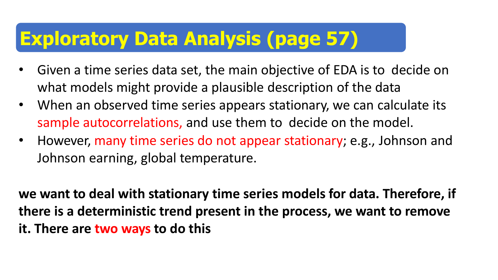
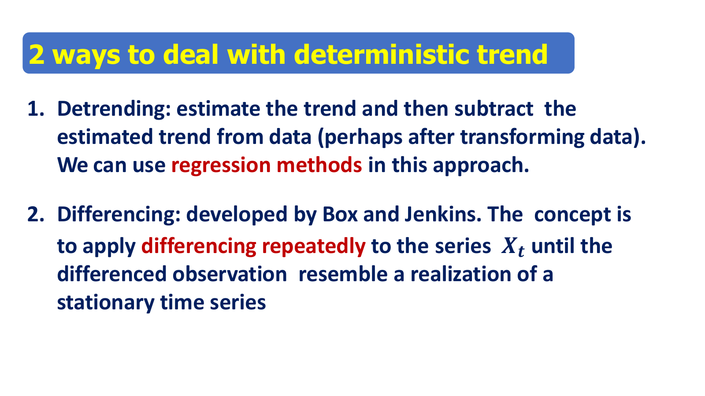
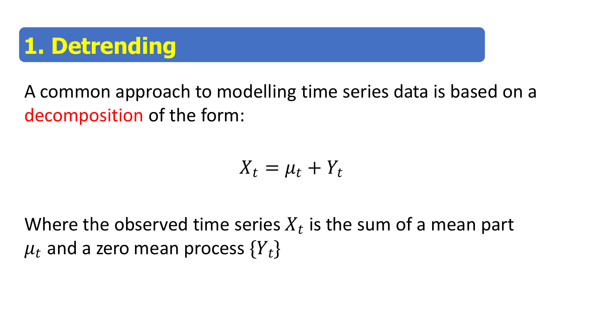


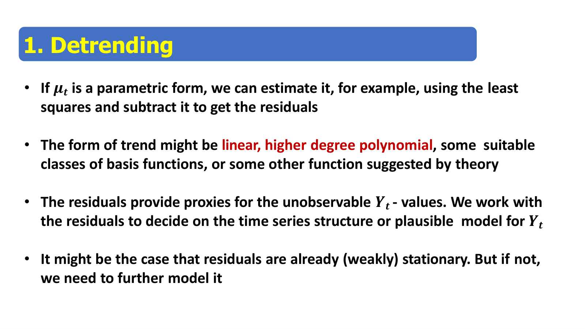
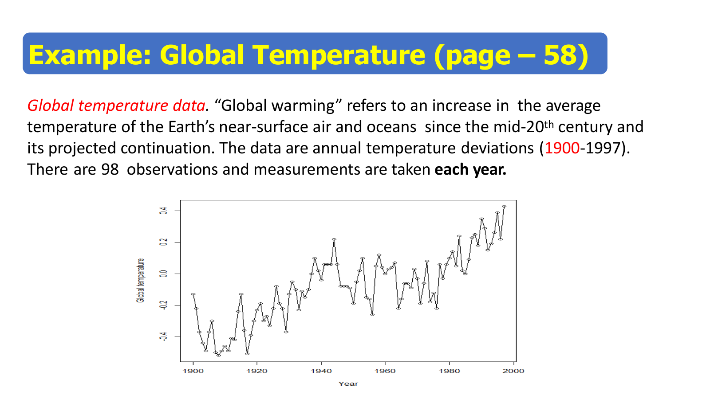

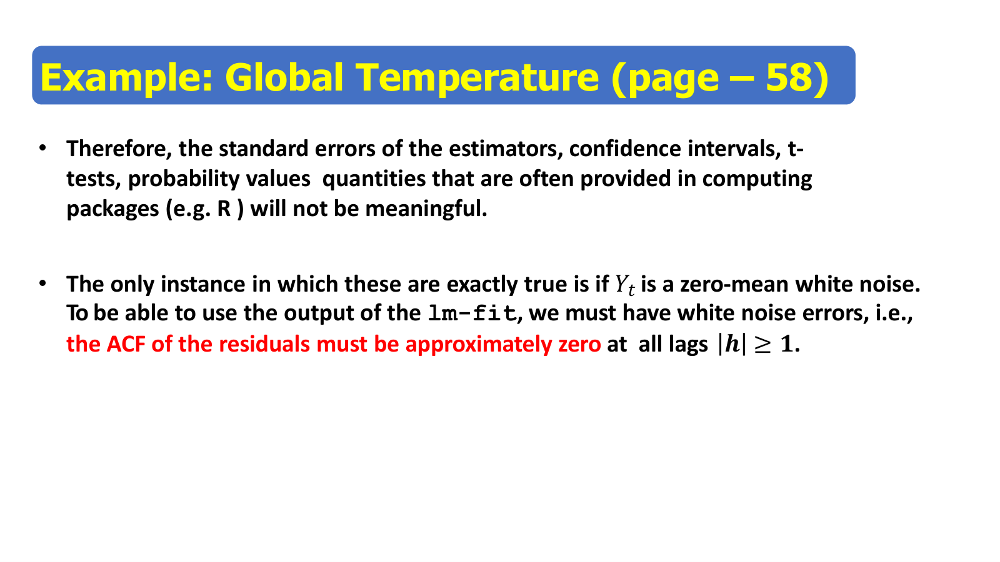
ระหว่างสองวิธี differencing เป็นที่นิยมกว่า ส่วน detrending เข้าใจง่ายกว่าสำหรับคนที่ไม่เคยเรียน และวิชานี้เน้น differencing45 ทั้งสองวิธีแก้ปัญหา non-stationary ได้ detrending คือ \(D_t=Y_t-T_t\) ลบเส้น trend ที่เวลาเดียวกัน ส่วน differencing คือ \(\nabla Y_t=Y_t-Y_{t-1}\) ลบตัวที่ติดกัน46 ข้อมูลบางชุด เช่น global temperature ยังดูไม่นิ่งหลัง detrending ทางเลือกคือ differencing แทนการ fit โมเดล trend โดยพิจารณา the first differenceprocess ∇𝑋𝑡 คือ \(\nabla X_t=X_t-X_{t-1}\) ต่างประเทศใช้สัญลักษณ์ ∇ (nabla) ส่วนในไทยมักใช้ Δ ซึ่งหมายถึงสิ่งเดียวกัน47 ลองดูข้อมูล 12, 14, 17, 18, 21, 23 ผลต่างคือ 2, 3, 1, 3, 2 โดย \(\nabla X_1\) หาไม่ได้เพราะไม่มี \(X_0\) อนุกรมผลต่างจึงสั้นลงหนึ่งตัว48 ข้อมูลเดิมเพิ่มขึ้นต่อเนื่อง แต่ผลต่างแกว่งรอบ 2.2 และไม่เพิ่มขึ้น trend เส้นตรงจึงกลายเป็นค่าคงที่ซึ่งเท่ากับความชัน ใน R ใช้ diff(x)
สไลด์ให้กลับไปที่ problem 1.6 อีกครั้ง เพื่อแสดงว่า (i.e. differencing) \(Y_t=\nabla X_t=X_t-X_{t-1}\) นิ่ง ข้อนี้เป็นการบ้าน49
\(Y_t=(\beta_1+\beta_2t+w_t)-(\beta_1+\beta_2(t-1)+w_{t-1})\)
\(\beta_1-\beta_1=0\) และ \(\beta_2t-\beta_2t+\beta_2=\beta_2\) จึงได้ \(Y_t=\beta_2+w_t-w_{t-1}\)
\(E(Y_t)=\beta_2\) ไม่ขึ้นกับ t และ \(\gamma(0)=\mathrm{Var}(w_t)+\mathrm{Var}(w_{t-1})=2\sigma^2\)
\(Y_{t+1}=\beta_2+w_{t+1}-w_t\) ตัวที่ตรงกันคือ \(w_t\) (+1 ใน \(Y_t\) และ −1 ใน \(Y_{t+1}\)): \(\gamma(1)=-\sigma^2\)
ไม่มีตัวที่ตรงกัน: 0
detrending ให้ white noise พอดี ส่วน differencing ก็กำจัด trend ได้เหมือนกัน แต่สร้าง correlation −0.5 ที่ lag 1 ขึ้นมาเอง เพราะผลต่างที่ติดกันใช้ \(w_t\) ร่วมกันด้วยเครื่องหมายตรงข้าม หน้าตานี้คือโมเดล MA(1) ใน Lesson 5 ที่ θ = −1 และเป็นที่มาของคำเตือนใน Lesson 7 ว่าถ้า diff เกินจำเป็น ACF ที่ lag 1 จะเข้าใกล้ −0.5 หลัง differencing เราใช้ทฤษฎีของอนุกรมที่นิ่งสร้างโมเดลและพยากรณ์ แล้ว transform this analysis back in terms of the original series {𝑋𝑡} เช่น ถ้าพยากรณ์ผลต่างถัดไปได้ 2 และค่าล่าสุดคือ 23 ค่าพยากรณ์ของข้อมูลเดิมคือ 23 + 2 = 25
เครื่องมือที่ทำให้เขียนผลต่างได้สั้นลงคือ backshift operator ซึ่ง B ไม่ใช่ตัวอักษรธรรมดา แต่เป็น operator ที่นิยามว่า \(BX_t=X_{t-1}\) จึงเขียน \(\nabla X_t=X_t-X_{t-1}=(1-B)X_t\) ได้ โดยดึง \(X_t\) ออกมา และ \(B^2X_t=X_{t-2}\)50 B คือสัญลักษณ์หลักของ ARIMA ใน Lesson 5–7 ตัวอย่างเช่น ทำไม \((1-B)^2X_t=X_t-2X_{t-1}+X_{t-2}\) กระจายพหุนามได้ \((1-B)^2=1-2B+B^2\) และ \(B^2X_t=B(BX_t)=BX_{t-1}=X_{t-2}\) แทนกลับได้ \(X_t-2X_{t-1}+X_{t-2}\) ตรวจกับข้อมูลข้างบนที่ t = 4 ได้ \(\nabla^2X_4=\nabla X_4-\nabla X_3=1-3=-2\) และ \(18-2(17)+14=-2\) ตรงกัน
ทั้งสองวิธีแปลงอนุกรมที่ไม่นิ่งให้นิ่ง (or at least appears) ข้อดีของ differencing คือไม่ต้องประมาณพารามิเตอร์ใดเลย ข้อเสียคือไม่ได้ค่าประมาณของ error process \(Y_t\) และไม่ได้เส้น trend ออกมาให้ตีความ ส่วน detrending ต้องประมาณ \(\beta_1,\beta_2\) แต่ได้ทั้ง trend และ residual และจำนวนข้อมูลเท่าเดิม ขณะที่ differencing ทำให้ข้อมูลลดครั้งละหนึ่งจุด สไลด์เน้นว่า Although you can difference the data more than once, one differenceis usually sufficient. ส่วน detrending มักใช้เส้นตรงง่าย ๆ ข้อมูลบางชุดต้องแปลงก่อน เช่น ความแปรปรวนไม่คงที่ใช้ log หรือ square root ใน Lesson 7 และ seasonal differencing เช่น \(X_t-X_{t-12}\) จะเรียนในบท SARIMA
เมื่อลอง differencing กับอุณหภูมิโลก ได้ผลต่าง 97 ค่าที่ไม่มี trend แล้ว ค่าเฉลี่ยของผลต่าง 0.0058 องศาต่อปีใกล้กับความชัน 0.0062 ของเส้นตรง ตรงกับที่ differencing เปลี่ยน trend เส้นตรงเป็นค่าคงที่ ACF ไม่ลงช้า ๆ แล้ว และมีแบบแผนที่ดีขึ้น51 lag 1–4 คือ −0.196, −0.191, −0.195 และ 0.162 ซึ่งปริ่มเส้นลบ ±0.203 เล็กน้อย และ ADF ให้ Dickey-Fuller = −6.8589 กับ p-value ≤ 0.01 จึงสรุปว่านิ่ง ต่างจากข้อมูลเดิมและ residual หลัง detrend ที่ได้ p-value 0.4726 ทั้งคู่ differencing จึงเหมาะกับข้อมูลชุดนี้มากกว่า สไลด์หน้าสุดท้ายนำกราฟ residual หลัง detrending กลับมาอีกครั้ง residual ยังเกาะกลุ่มเป็นช่วงยาว เช่น ปีที่ 38 ถึง 48 เป็นบวก และปีที่ 70 ถึง 80 ติดลบถึงราว −0.3 จึงไม่ใช่ white noise เมื่อเทียบกับผลของ differencing จึงได้ข้อสรุปเดียวกับที่วิชาเน้น คือ differencing เป็นวิธีหลัก และจำนวนครั้งที่ diff คือตัว d ใน ARIMA(p, d, q)
diff1 <- diff(temp.1900)
plot(diff1, ylab = "Global temperature first differences")
acf(diff1)
library(tseries); adf.test(diff1)length(diff1) = 97 mean(diff1) = 0.0058 ACF lag 1–4: -0.196 -0.191 -0.195 0.162 (เส้นขอบ ±2/√97 = ±0.203) Dickey-Fuller = -6.8589, Lag order = 4, p-value = 0.01 (p-value smaller than printed)
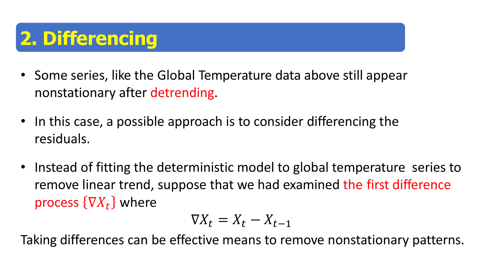

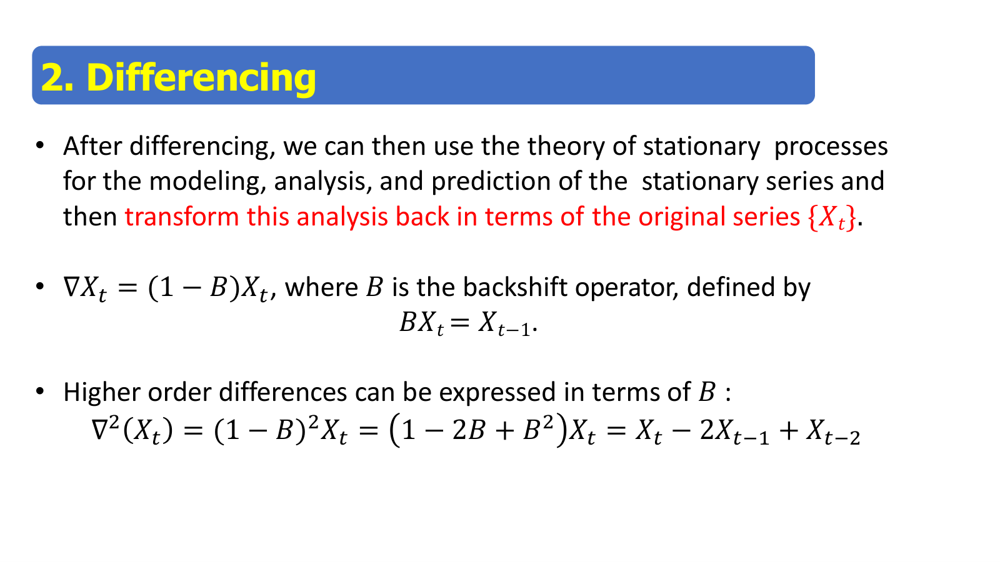
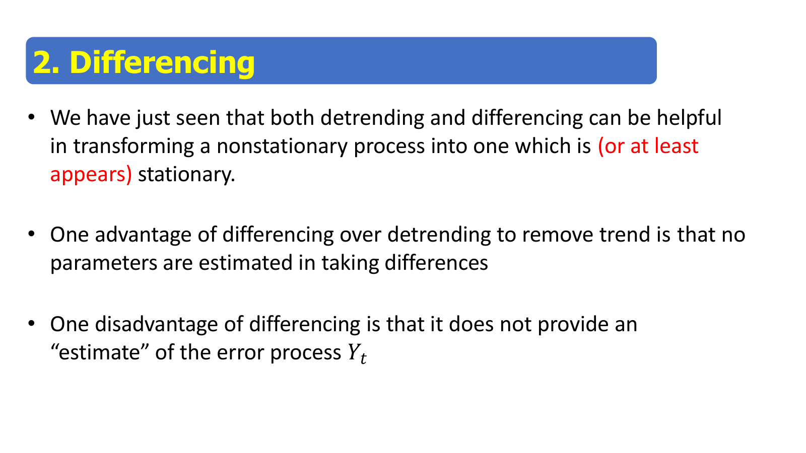


หน้าแบบฝึกมีเฉลย Exercise 1 ข้อ 5–8 ที่รันกับข้อมูลจริง และข้อสอบปลายภาคปีก่อน ๆ ที่ออกจากบทนี้พร้อมแม่แบบคำตอบ ลองฝึกต่อในแบบฝึก Lesson 3 หรืออ่านต่อ Lesson 4 — Smoothing methods และ decomposition
ตัวเลขยกในเนื้อหาชี้มาที่รายการนี้ แต่ละรายการระบุคลาสและนาทีของคลิป พร้อมถ้อยคำในคลิปเมื่อมี
| หน้า | เนื้อหา | อยู่ในตอน |
|---|---|---|
| 1 | ปก Estimating means and covariances | etc — ปก |
| 2–6 | Estimation from data, population, ตัวประมาณ | ตอน 1 |
| 7–9 | Correlogram, large sample distribution | ตอน 2 |
| 10 | In-class example | ตอน 1 |
| 11–14 | R-Example white noise และ global temperature | ตอน 2 |
| 15–16 | ADF test | ตอน 3 |
| 17 | หน้าคั่น Dealing with Deterministic Trend | etc — หน้าคั่น |
| 18–31 | Systematic pattern, problem 1.6, EDA, detrending, global temperature | ตอน 4 |
| 32–37 | Differencing, backshift operator | ตอน 5 |
แหล่งอื่นที่ใช้: Class 3 ช่วง 0:21–1:54 (ช่วง 0:00–0:21 เฉลย random walk อยู่ใน Lesson 1), Class 6 ที่ 1:14 (ρ̂ ต้องคำนวณเป็น) และ 1:46 (quadratic trend), Exercise 1 ข้อ 5–8, ไฟล์ R_codes, earthquake.txt, ventilation.txt (CLASS 3), temp.txt (CLASS 2) และ TSA::prescrip